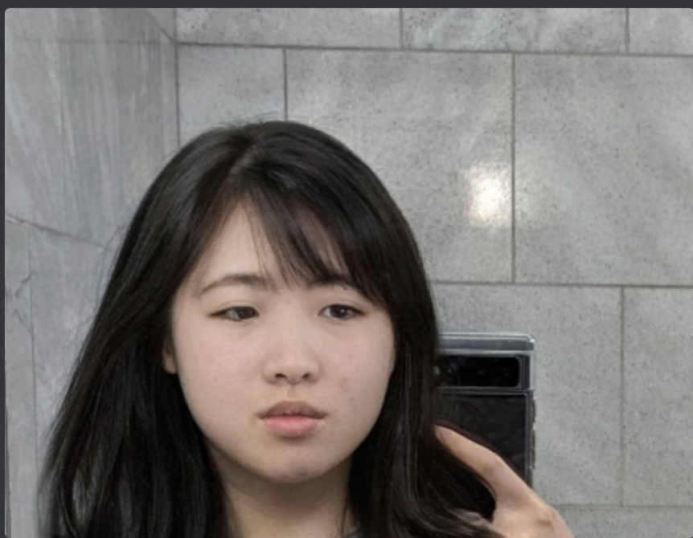

Kevin Zhao
Computer Science 2025
hiii what's up idrk what to put on here but this is supposed to be an introduction i guess.
im a computer science student studying computer science in the department of computer science so that's cool i guess
- commons
- lauder
- my own kitchen

click here
- This article really gave me a refresher on design intent. Not only
is it interesting to see what elements are included in a design but also what's not included
-
I really enjoyed viewing the gifs of each app being deconstructed. It helped me better understand the app's hierarchy so to speak.
-
"Next time you’re sitting in a Lyft or waiting on a friend, open up an app and think through the reasons why the designers chose to design it that way. By routinely analyzing other apps, you’ll develop your product thinking and get better at designing apps yourself."
-
8